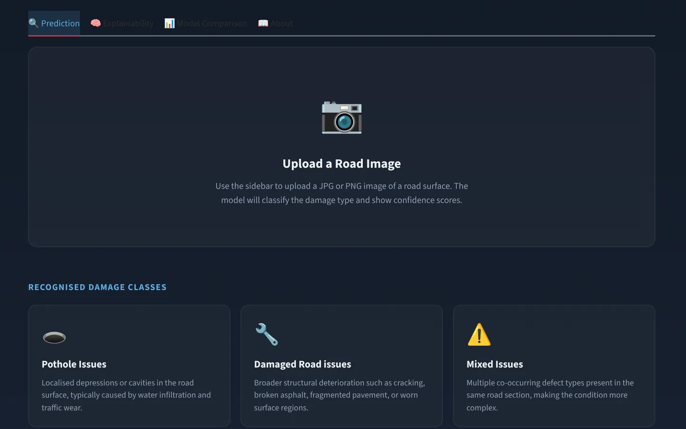
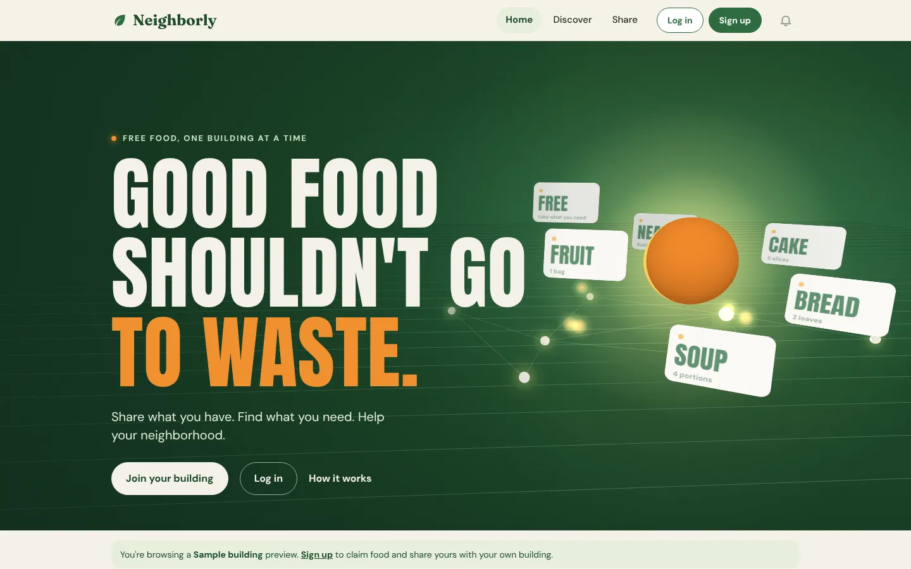
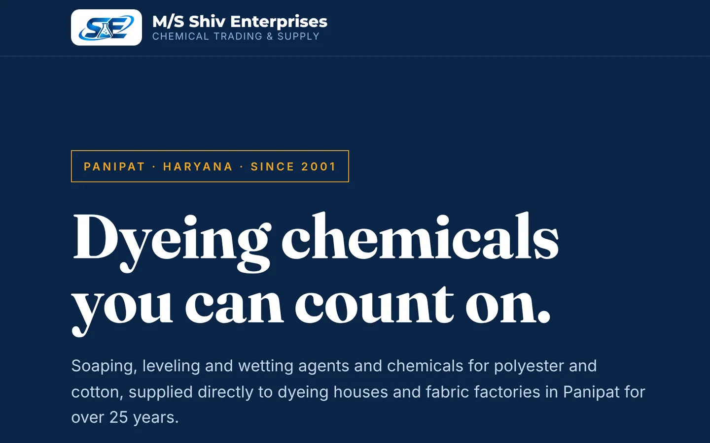

Programming
Python and Flask, HTML and CSS: projects. C and C++: coursework.
Open to internships and working-student roles
Software Engineering IT Security Networking Machine Learning
I'm a Software Engineering student in Berlin, learning how attacks and networks work so I can help defend against them.
About
I'm Akshit Rohilla, a Software Engineering student at the University of Europe for Applied Sciences in Potsdam, Germany.
My interest in cybersecurity started with curiosity about how cyberattacks work, how networks transmit data through packets, and how digital activities can be traced online. That curiosity led me to explore networking, Linux, programming and cybersecurity fundamentals.
I'm particularly interested in understanding how vulnerabilities can be exploited and, more importantly, how systems can be protected against them. I'm continuously developing my technical knowledge through hands-on learning and personal projects.
I'm currently looking for an internship or working-student opportunity where I can apply what I've learned, work on real-world challenges, and grow alongside experienced professionals.
Skills
Each skill is marked Project, Coursework or Self-study. Select one to see where I used it.
Python and Flask, HTML and CSS: projects. C and C++: coursework.
All used in Road Issues Detection.
Learned in modules and on my own.
Fundamentals from modules and hands-on practice.
Jira and LaTeX in projects, Linux through self-study.
Currently learning Linux, networking and Python, with OverTheWire wargames for introductory security exercises.
Projects

A deep-learning system that classifies road images into three damage classes (pothole, damaged road, mixed issues), intended to support road inspection.
My contribution
Built entirely on my own, from dataset preparation and training to evaluation, the prototype and the report.
A dataset of 4,216 images with a stratified 70/15/15 split and weighted sampling to handle class imbalance. A custom CNN compared with fine-tuned EfficientNetV2-S and ConvNeXt-Tiny in PyTorch. Grad-CAM and SHAP used to check that the model focused on damaged areas. A Streamlit prototype and a full LaTeX research report.
What I learned: handling imbalanced data, transfer learning, and checking what a model actually looks at.

A web app where neighbours share leftover food before it spoils.
My contribution
Designed and built the app and improved it from interviews and in-class testing.
Givers post, takers claim and pick up. Guests can browse; an account is needed to post or claim.
HTML, CSS and JavaScript with Firebase Authentication and Firestore, and an animated 3D home screen.
A Flask-based web portal for student communities, built over several sprints.
My contribution
The frontend (HTML, CSS) and Jira sprint tracking and task management.
Private project. Code available on request.
A Python benchmark of four search algorithms on the N-Queens problem.
My contribution
Built the benchmark and plotted the results.
Compared depth-first search, hill climbing, simulated annealing and a genetic algorithm on boards from N=10 to N=500, measuring runtime, memory and solution quality in Python. The write-up was co-authored with the supervising professor.

A website for a real dye-chemical trading business in Panipat, India, so customers can find the company and its products.
My contribution
Designed and built the site and handed it over to the business.
Call and WhatsApp enquiry buttons and a map, hosted on Netlify.
Journey
March 2025 to February 2028 (expected)
University of Europe for Applied Sciences, Potsdam
March 2025
Started the BSc in Software Engineering
University project
Built the frontend of the Student Community Portal in an Agile team
University project
Completed the N-Queens algorithm benchmark with a supervising professor
University project
Built and deployed the Road Issues Detection project
University project
Designed and launched Neighborly
Personal project
Built a website for a real business
Ongoing
Learning and practising
Contact
I'm looking for an internship or working-student position in Germany in IT security, networking, IT or software development.